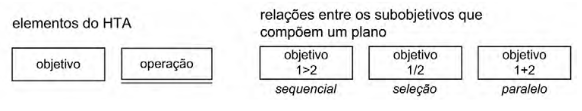
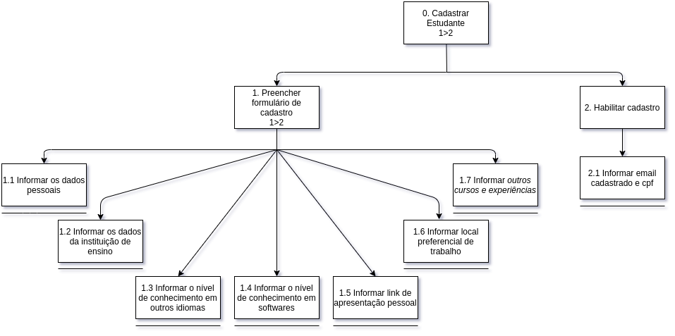
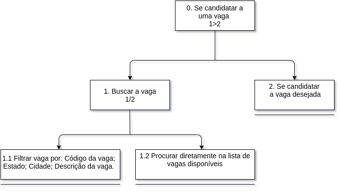

Análise de tarefas V1
A análise de tarefas é a atividade que busca ter um etendimento sobre o trabalho dos usuário, como eles realizam este trabalho e o por quê. Nesse tipo de análise, o trabalho é definido em termos dos objetivos que os usuários querem ou precisam atingir.
Dentre os métodos de análise de tarefas mais comuns, podemos destacar:
- Análise Hierárquica de Tarefas (HTA – Hierarchical Task Analysis);
- GOMS (Goals, Operators, Methods, and Selection Rules).
- ConcurTaskTrees (CTT).
Análise Hierárquica de Tarefas (HTA)
Foi desenvolvida para entender as competências e habilidades exibidas em tarefas complexas e não repetitivas, bem como para auxiliar na identificação de problemas de desempenho. Ela ajuda a relacionar o que as pessoas fazem (ou se recomenda que façam), por que o fazem, e quais as consequências caso não o façam corretamente.

Fonte: Livro IHC[1]
- Tarefa: uma tarefa é qualquer parte do trabalho que precisa ser realizada.
- Objetivo: são as ações que os usuários desejam excutar, estes são o nível mais alto da hierarquia de objetivos.
- Subobjetivos: são definidos quando um objetivo precisa executar mais de uma tarefa para ser finalizado.
- Plano: um plano define os subobjetivos necessários para alcançar um outro objetivo maior, e a ordem em que esses subobjetivos devem ser alcançados.
- Operação: uma operação é especificada pelas circunstâncias nas quais o objetivo é ativado (input ou entrada), pelas atividades ou ações (actions) que contribuem para atingi-lo e pelas condições que indicam o seu atingimento (feedback).
- Relações entre os subobjetivos
- 1>2: Sequêncial (objetivo deve ser atingido antes do próximo)
- 1/2: Seleção (objetivos que deverão ser atingidos dependem das circunstâncias)
- 1+2: Paralelo (mais de um objetivo deve ser atingido ao mesmo tempo)
HTA 01: Cadastrar estudante

HTA 02: Se candidatar a uma vaga

Análise GOMS (Goals, Operators,Methods and Selection Rules)
Técnica que busca representar o comportamento dinâmico da interação com o computador, com base num modelo do comportamento humano. Possui três subsistemas de interação: perceptual, motor e cognitivo.
Significados:
- Metas (Goals): Aquilo que o usuário deseja fazer;
- Operadores (Operators): Ações humanas básicas que o usuário executa (ex: olhar tela, escutar beep, pressionar tecla, decidir, lembrar um item da memória de trabalho, etc);
- Métodos para atingir as metas (Methods): Seqüência de passos para se atingir uma meta. Seus passos podem ser submetas, operadores ou uma combinação de ambos;
- Regras de seleção de métodos (Selection rules): Regras para seleção do método a ser utilizado.
Exemplo
GOAL 0: descobrir direção de tráfego de uma rua
GOAL 1: encontrar a rua
METHOD 1.A: zoom até o nível de ruas
(SEL. RULE: a região em que se situa a rua está visível no mapa e o usuário conhece o local)
METHOD 1.B: fazer busca pelo nome da rua
(SEL.RULE: o usuário não conhece o local ou o mapa visível está longe de lá)
GOAL 2: identifi car a direção do tráfego na rua
GOMS (Card, Moran, and Newell’83)
GOMS 01: Convênio de escola
GOAL: CONVÊNIO-DE-ESCOLA
GOAL: ENCONTRAR-CARD-DE-ESCOLA se estiver na página inicial
.ACESSAR-PÁGINA-CONVÊNIO
GOAL: CADASTRAR-ESCOLA
.LOCALIZAR-FORMULÁRIO se estiver no início da página
.PREENCHER-FORMULÁRIO se estiver vazio
[ SEGUIR-INSTRUÇÕES-DE-PREENCHIMENTO]
.VERIFICAR-DADOS-INFORMADOS
GOMS 02: Cadastro de estudante
GOAL: CADASTRO-ESTUDANTE
GOAL: ENCONTRAR-CARD-DE-ESTUDANTE se estiver na página inicial
.IDENTIFICAR-LINK-CADASTRO
.ACESSAR-PAGINA
.SELECIONAR-TIPO-ESTUDANTE
GOAL: CADASTRAR-COMO-ESTUDANTE
.LOCALIZAR-FORMULÁRIO se estiver no início da página
.PREENCHER-FORMULÁRIO se estiver vazio
.VERIFICAR-DADOS-INFORMADOS
GOAL: CONFIRMAR-DADOS
.PREENCHER-DADOS-PESSOAIS
.INFORMAR-LOGIN
.INFORMAR-SENHA
GOMS Simplificado (Lee’93)
Analisa apenas metas e submetas;
Pode ser expandido até se tornar um modelo GOMS completo;
Não requer que decisões de design sejam tomadas;
Modelagem:
- faça a análise top-down;
- use termos gerais para descrever metas;
- examine todas as metas antes de subdividi-las;
- considere todos os cenários de tarefas;
- use sentenças simples para especificar as metas;
- retire os passos de um método que sejam operadores;
- pare a decomposição no limite do design de interface.
GOMS SIMP 01: Calcular recesso
1.calcular recesso
1.1a Se (já tem cadastro) então (realizar login)
{
1.Fazer login como estudante
}
1.1b Se (não tem cadastro) então (cadastrar como estudante)
{
1.Ir para a página inicial
2.Identificar o card de Estudante
3.Acessar o link de cadastro
4.Preencher os dados
5.Confirmar dados
6.Confirmar cadastro no email informado
7.Realizar login
}
1.2 calcular recesso remunerado
{
1.Identificar link de calcular recesso na página de usuário
2.Acessar página
3.Localizar novo link para cálculo de recesso
4.Acessar nova página
5.Preencher os campos necessários
6.Clicar no botão de calcular
7.Ter acesso aos dados
}
Histórico
| Data | Versão | Descrição | Autor(es) |
|---|---|---|---|
| 04/10/20 | 0.1 | Adição do método HTA | Gustavo Nogueira |
| 04/10/20 | 0.2 | Adição do método GOMS | Nícalo Ribeiro |
| 29/10/20 | 0.3 | Definição de página secundária | Nícalo Ribeiro |
Referências
- [1] BARBOSA, Simone; SILVA, Bruno. Interação Humano-Computador, Capítulo 8 - Princípios e Diretrizes para o Design de IHC .Rio de Janeiro – RJ: Elsevier Editora Ltda, 2010.